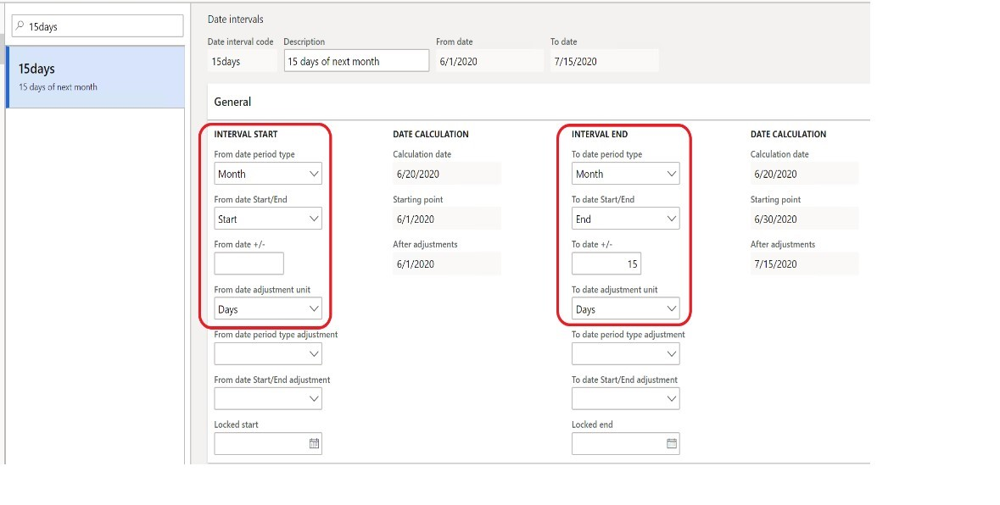
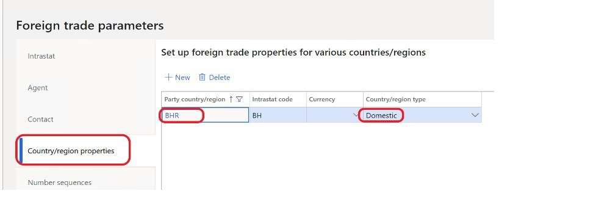
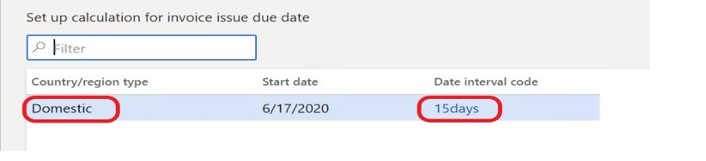
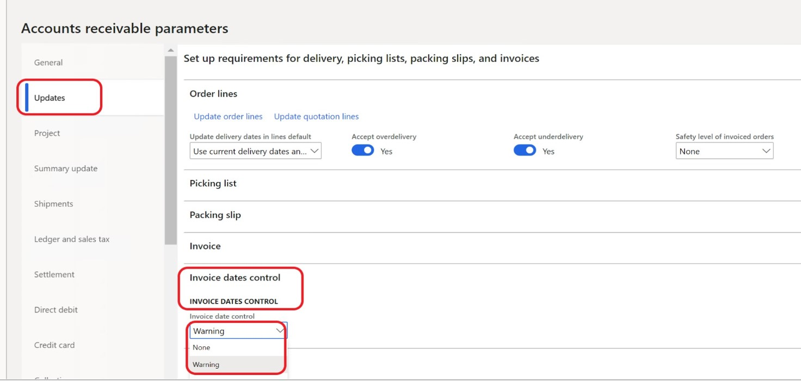

Invoice issue deadline (GBL)
Important
Some or all of the functionality noted in this topic is available as part of a preview release. The content and the functionality are subject to change. For more information about preview releases, see Service update availability.
This topic explains how to configure Microsoft Dynamics 365 Finance so that it complies with legal requirements for the invoice issue deadline. For example, legislation can require that an invoice be issued no later than the fifteenth day of the month after the month when the sale occurs.
Prerequisites
In the Feature management workspace, turn on the Invoice issue deadline availability feature. This feature is available for all countries and regions in version 10.0.15 and later.
For more information about how to turn on features, see Feature management overview.
Note
This feature is the same as the out-of-box feature for European Union (EU) countries. For more information, see Invoice issue deadline.
Setup
Follow these steps to set up the functionality for the invoice issue deadline.
Go to General ledger > Ledger setup > Date intervals.
On the Date intervals page, create a date interval.
On the General FastTab, in the Interval start and Interval end sections, set the fields to appropriate values.

Note
The preceding illustration shows an interval of 15 days. If the date interval is set up in this way, the deadline for issuing the invoice will be the fifteenth day of the month after the month when the packing slip is issued. If you leave the To date period type and To date Start/End fields in the Interval end section blank, the deadline for issuing the invoice will be the fifteenth day after the packing slip is issued.
Go Tax > Setup > Foreign trade.
On the Foreign trade parameters page, on the Country/region properties tab, select New.
On the line for the new record, in the Party country/region field, select a country or region. Then, in the Country/region type field, select the type of country or region. For example, select Domestic.

Go to Accounts receivable > Setup > Set up calculation for invoice issue date or Accounts payable > Setup > Set up calculation for invoice issue date.
On the Set up calculation for invoice issue due date page, create a record.
Set the Country/region type and Date interval code fields.
In the following illustration, the validation for the invoice issue deadline is applicable to posted packing slips or product receipts that have a domestic address.

Go to Accounts receivable > Setup > Parameters.
On the Accounts receivable parameters page, on the Updates tab, on the Invoice date control FastTab, in the Invoice date control field, select one of the following values:
- None – Date control isn't run.
- Warning – The invoice is posted, but a warning message appears afterward.
- Error – The invoice isn't posted, and an error message appears.
Note
If you select Warning or Error, the validation is applicable to sales invoices that were posted based on packing slips.

Based on the settings, the system enters a value in the Invoice issue due date field in the packing slip journal and the product receipt journal. You can view all the packing slips that aren't yet invoiced by going to Sales and marketing > Sales orders > Order shipping > Packing slip not invoiced. You can view all the product receipts that aren't yet invoiced by going to Procurement and sourcing > Purchase orders > Receiving products > Product receipt not invoiced.
Note
If you set the Invoice date control field on the Accounts receivable parameters page to None, the system leaves the Invoice issue due date field in the packing slip journal blank.